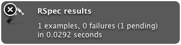

Rspec環境を充実させるメモ わりと今さらな内容ですが、何回も人に説明しているし、何回か同じところで躓いたりしているので備忘的に自分メモ。
- Rspec: テスト環境本体
- Spork: 起動を早くする仕組み(常時サーバを立ちあげておく)
- Guard: ファイルの変更を監視してファイルが変更されたら随時テストを実行する)
Rspecを使えるようにする。
ディレクトリ作って、bundle initする。
$ mkdir rspec_env_spike
$ cd rspec_env_spike
$ bundle init
Gemfile (あとでrailswizardでセットアップするので必要最低限だけ)
source 'https://rubygems.org'
gem 'rails', '3.2.13'
bundlerで railsだけ入れておく。(以降、bundle execするのを忘れないように)
$ bundle install --path vendor/bundle
railswizard 使って rails newする。pow と rspecだけ入ってる状態。
$ bundle exec rails new . -m http://railswizard.org/cfeea747d830f4f73699.rb -T
rspec install
$ bundle exec rails g rspec:install
spikeなので適当にscaffoldして、db migrateする
$ bundle exec rails g scaffold book isbn title publish:date
$ rake db:migrate
テスト実行
$ bundle exec rspec
=> ..*..........................*
=> Finished in 1.19 seconds
=> 30 examples, 0 failures, 2 pending
Sporkを使えるようにする
テストの起動が遅いので sporkを入れる。
$ time bundle exec rspec
real 0m8.673s
user 0m7.782s
sys 0m0.742s
Gemfileに追加して bundle update
# Gemfile
group :development, :test do
...
gem 'spork'
end
$ bundle update
sporkのセットアップ
$ bundle exec spork --bootstrap
# spec/spec_helper.rb に追記してくれる
sporkを起動
$ bundle exec spork
=> Using RSpec
Preloading Rails environment
Loading Spork.prefork block...
Spork is ready and listening on 8989!
‘–drb’付きで Rspec実行
# 別windowを開いて実行
$ time bundle exec rspec --drb
real 0m4.550s
user 0m2.324s
sys 0m0.204s
# 2倍くらいのスピード !
# .rspecファイルに '--drb' と書いておくとデフォルトオプションとして扱ってくれる
参考: https://github.com/sporkrb/spork
Guardを使えるようにする
ファイルを監視して変更されたら自動的にテスト実行する
Gemfileに追加して bundle update
# Gemfile
group :development, :test do
...
gem 'guard-spork'
gem 'guard-rspec'
gem 'growl' # Mac OS 10.7 まで
end
$ bundle update
Guardセットアップコマンドを実行
$ bundle exec guard init spork
$ bundle exec guard init rspec
Guardを実行
$ bundle exec guard start
ファイルを修正すると、対応する単体テストが流れる。結果はGrowlで通知されるので便利。
単体テストに失敗した場合
単体テストに成功した場合
対応するテストが成功するとその後、全テストが流れる
